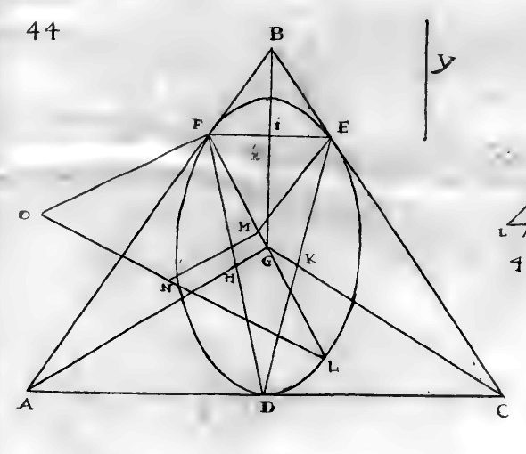
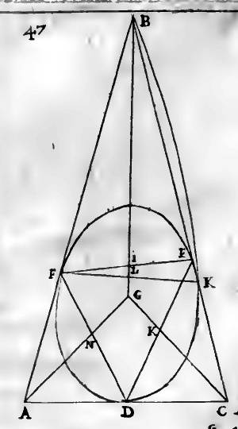
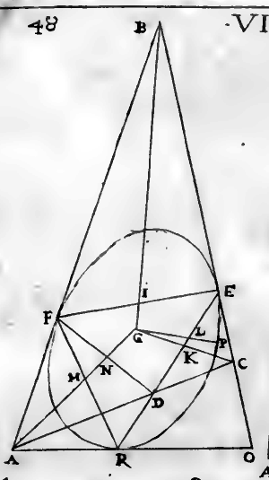
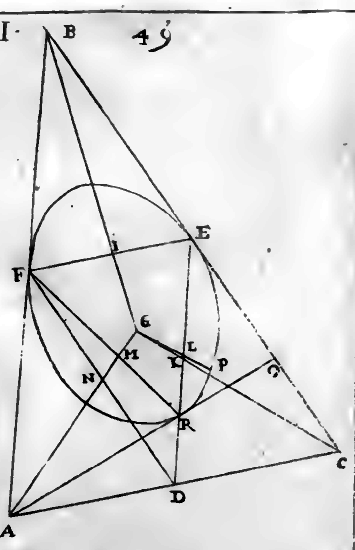

Propositio IX · Problema I & Lemmata IV–V¶








PROP. IX. PROB. I. (tab. 5. fig. 44, pp. 44–46)
Proposito triangulo, ellipsim, vel quando possibile est, circulum eidem inscribere, ita vt ex tribus contactuum punctis duo qualibet sint data.
f. 0062 · p. 45Sit triangulum ABC, & in eo data puncta FE, per quae ducenda ellipsis debeat contingere lineas AB, CB. Ponatur problema, vt factum, sitque ellipsis inscripta FED, contingens reliquum latus AC in D. Cum igitur CD ad DA componatur ex rationibus geometricè datis FB ad FA, & CE ad EB, erit punctum D datum, quare si iungantur lineae DF, FE, ED, & ipsae datae erunt; atque adeò etiam iunctae AH, BI, CK, quae diametri erunt eiusdem ellipsis. Cumque in vnaquaque ipsarum, centrum dictae ellipsis existat, atque sibi ipsis in vno, eodemque puncto G occurrant, erit hic occursus datus, atque adeò datum erit praedictum centrum G. Lineae igitur AG, BG, CG, erunt illae, quae ex centro sectionis dicuntur; quare si vna ipsarum protrahatur, nempe FG à puncto G, atque in productione notetur GL aequalis FG, erit punctum L datum, vnà cum FL diametro; Et quia punctum datum E in sectione ponitur, estque contingens BF positione habita; quae igitur ab ipso puncto ducitur aequidistans ipsi BF, occurrens diametro FL in M, erit positione, & longitudine determinata, eritque ad eandem diametrum FL ordinatim applicata. Fiat iam vt FM data ad ME, ita ME ad aliam lineam Y, cui secetur aequalis MN perpendiculariter excitata à puncto dato M, ad FL positione habitam; ductaque, indeterminatè, ab F puncto dato, linea FO ipsi MN aequidistante, iungatur LN, & producatur donec occurrat FO in O. Hoc posito datum erit punctum O; rectangulum verò FMN erit aequale quadrato applicatae ME, quod rectangulum adiacet lineae FO, latitudinemque habet ipsam FM inter applicatam EM, & tactum F interiectam, & deficit figura simili, & similiter posita ei, quae diametro FL, & linea FO continetur; quamobrem diameter FL erit transuersum figurae latus, & FO rectum. Si igitur datis duabus rectis lineis terminatis FO, FL, ad rectos inter se angulos, inueniamus ellipsim circa diametrum FL, ita vt vertex sit punctum F ad rectum angulum, & ordinatim applicatae in angulo BFL possint, vt ME, rectangula adiacentia ipsi FO, quae latitudinem habeant lineam inter verticem F sectionis, & applicatas ipsas interiectam, deficiantque figura simili, & similiter posita ei, quae lineis FO, FL, continetur; ellipsis haec continget lineam BA in F, & transibit per punctum E. Dico insuper quod huiusmodi ellipsis ita transibit per E, vt non
f. 0063 · p. 46secet, sed tangat BC, & AC, atque adeò problemati satisfactum esse.
Haec autem fient conspicua duobus lemmatibus, ijsdem retentis literis, ac suppositione.
LEMMA IV. (tab. 6. fig. 47, p. 46)
Si ellipsis FED transiens per punctum E non contingit lineam BC, contingat si possibile est aliam lineam BK, & iungantur FK, KE. Quoniam igitur FB contingit sectionem in F, diameter BG secabit bifariam in L lineam FK, quae iungit contactus FK, eritque FL aequalis LK; sed etiam FI ex suppositione est aequalis IE; ergo linea EK parallela erit diametro BG, ideoque non conuenient. At quia DC ad DA componitur ex rationibus BF ad FA, & CE ad EB, suntque FD, FE, ED, bifariam sectae in NIK, iunctae AN, BI, CK, se inuicem secabunt in eodem puncto, intra triangulum FED; & propterea punctum G infra lineam FE existet; sed est etiam infra FK, quia duae tangentes BF, BK, conueniunt, ergo linea KE non erit parallela diametro BG, quod fieri non potest; ellipsis ergo DFE tanget lineam BEC in puncto E.
LEMMA V. (tab. 6. fig. 48, 49, p. 46)
Si ellipsis, cuius centrum G contingens duas BFA, BEC rectas lineas in EF, non tangit etiam ADC in D, esto linea sectionem tangens ARO; & quia OR ad RA componitur ex rationibus BF ad FA, & OB [OE] ad EB, constat punctum contactus esse in R; itaque cum AF, AR tangant ellipsim, diameter AG bifariam diuidet FR, quae iungit contactus; sed etiam FD secta fuit bifariam ex suppositione in N; ergo RD parallela erit diametro AG, quare etiam FL ab ipsa diametro secabitur bifariam in centro G (erit enim ex 2. l. 6., vt FN ad ND, ita FG ad GL;) & ideo linea GF, hoc est GP aequalis erit ipsi GL, totum parti, quod est absurdum, est enim punctum L intra ellipsim, & ideo intra lineam GP.